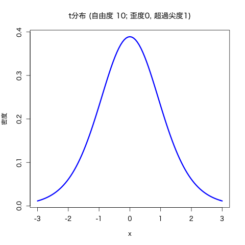
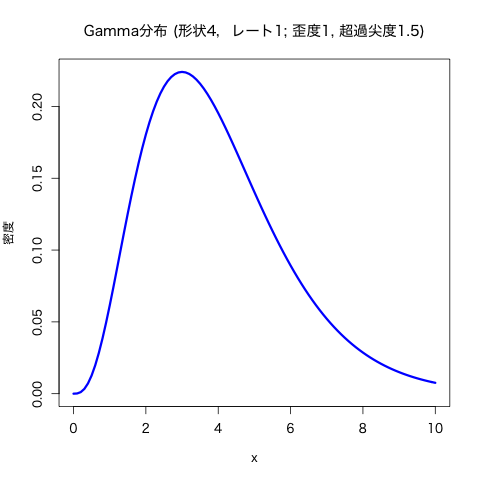

基礎的な記述統計量とデータの集約
(Press ? for help, n and p for next and previous slide)
村田 昇
2020.06.12
不偏性 (unbiasedness):
推定量 \(\hat{\theta}\)
が不偏であるとは, \(\hat{\theta}\)
の平均が真の値 \(\theta\) となる性質
平均 (mean):
標本平均 (sample mean):
データの代表値を表す記述統計量
分散 (variance):
標本分散 (sample variance):
データのばらつき具合を表す記述統計量
標本平均は \(\mu\) の 不偏推定量である:
標本分散は \(\sigma^2\) の 不偏推定量ではない:
(標本分散は平均的には真の分散を 過小推定 する)
バイアス補正: 標本分散に \(n/(n-1)\) を乗じたもの
は \(\sigma^2\) の不偏推定量となる
基本書式
mean(x, trim = 0, na.rm = FALSE, ...) # 標本平均
var(x, na.rm = FALSE, ... ) # 不偏分散
sd(x, na.rm = FALSE) # 標本標準偏差
x: ベクトル，データフレームなどna.rm: 欠損値を取り除くか否かデータ \(X_{1},X_{2},\dotsc,X_{n}\) の標準化:
( \(s\) の代わりに \(S\) で割って定義する文献もある)
標本平均50, 標準偏差10に線形変換:
基本書式
scale(x, center = TRUE, scale = TRUE) # 標準化
10 * scale(x) + 50 # 偏差値得点に変換
x: ベクトル，データフレームなどcenter: 中心化(平均0)するか否かscale: 正規化(分散1)するか否か
東京都の気候データ (tokyo_weather.csv) の中の
気温, 日射量, 風速の項目について以下の問に答えよ．
myData <- read.csv("data/tokyo_weather.csv", fileEncoding="utf8")
歪度 (skewness): 平均 \(\mu\) , 分散 \(\sigma^2\) で 3次モーメントをもつ確率変数 \(X\) に対して以下で定義
尖度 (kurtosis): 4次のモーメントをもつ確率変数 \(X\)
超過尖度 (excess kurtosis): 正規分布との比較のため尖度から正規分布の尖度3を引いた量
(こちらを単に尖度と呼ぶ文献もあるので注意)
超過尖度が負の場合: 分布の形状は丸みを帯びている
正の場合，正規分布に比べて平均まわりの密度が 分布の裾の方にまわっていることが多いため, 正規分布より裾が重いと解釈されることが多い


標本歪度 (sample skewness):
標本尖度 (sample kurtosis):
歪度・尖度を計算する関数はRの標準機能にはないので
package::e1071 を利用 (自作してもよい)
標本歪度・標本尖度の値は標本平均・分散に比べて ばらつきが大きい ので， サンプル数が少ない場合の計算結果の解釈には注意が必要
基本書式
skewness(x, na.rm = FALSE, type = 3) # 標本歪度
kurtosis(x, na.rm = FALSE, type = 3) # 標本超過尖度 (尖度ではない)
x: ベクトル，データフレームなどna.rm: 欠損値を取り除くか否かtype: 計算法の指定(通常は既定値でよい)tokyo_weather.csv) の中の
気温, 日射量, 風速の項目について以下の問に答えよ．
共分散 (covariance):
標本共分散 (sample covariance):
\(X_1,X_2,\dots,X_n\) および \(Y_1,Y_2,\dots,Y_n\) に対して
相関 (correlation):
標本相関 (sample correlation):
\(X_1,X_2,\dots,X_n\) および \(Y_1,Y_2,\dots,Y_n\) に対して
基本書式
cov(x, y = NULL, use = "everything",
method = c("pearson", "kendall", "spearman")) # 共分散
cor(x, y = NULL, use = "everything",
method = c("pearson", "kendall", "spearman")) # 相関
x,y: ベクトル，データフレームなど (データフレームの時は列間の共分散行列，相関行列を計算)use: 欠損値などの扱いに関する指定method: 計算法の指定(通常は既定値 pearson でよい)tokyo_weather.csv) の中の
気温, 降水量, 日射量, 降雪量, 風速, 気圧, 湿度 (数値データ)
の項目について以下の問に答えよ．
中央値 もしくは メディアン (median):
データを昇順に並べ替えたとき中央にくる値
基本書式
median(x, na.rm = FALSE, ...) # 中央値
quantile(x, probs = seq(0, 1, 0.25), na.rm = FALSE,
names = TRUE, type = 7, ...) # 分位点
summary(x) # 最大，最小，四分位点，平均を計算する
x: ベクトルna.rm: 欠損値を取り除くか否かprobs: 計算する分位点の値names: 出力に関する指定，多数の分位点を計算する場合は FALSE とした方がよいtype: 計算法の指定( help(quantile) を参照)連続分布の \(100\alpha\) %分位点 :
\(0<\alpha<1\) に対して，その分布に従う確率変数を \(X\) としたとき， 不等式
\begin{equation} P(X\leq x)\geq\alpha \end{equation}を満たす実数 \(x\) のうち最小のもの．
そのような実数は常に存在し, それを \(q_\alpha\) とすると
\begin{equation} P(X\leq q_\alpha)=\alpha \end{equation}が成り立つ．
分位点の性質
\(X_1,X_2,\dots,X_n\) が独立同分布な確率変数の列のとき, \(X_1,X_2,\dots,X_n\) の \(100\alpha\) %分位点は， \(n\to\infty\) のとき \(X_1,X_2,\dots,X_n\) の従う 分布の \(100\alpha\) %分位点の 一致推定量 となる．
基本書式
# 正規分布の例
qnorm(p, mean = 0, sd = 1, lower.tail = TRUE, log.p = FALSE)
# xxx分布の場合は以下の形式
qxxx(p, "分布の特性を決める option の指定")
p: 分位点 (100p%)mean, sd: 正規分布の特性を決めるoptionlower.tail: TRUE なら \(P(X\le x)\) を計算，
FALSE なら逆log.p: 出力を対数とするか否か (値が小さい場合に利用)tokyo_weather.csv) の中の
気温(数値データ)と最多風向(ラベルデータ)を用いて
以下の問に答えよ．